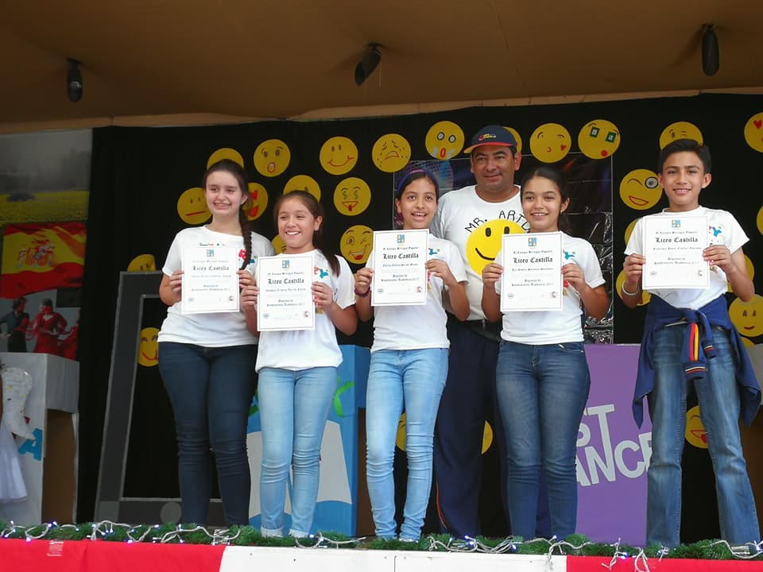
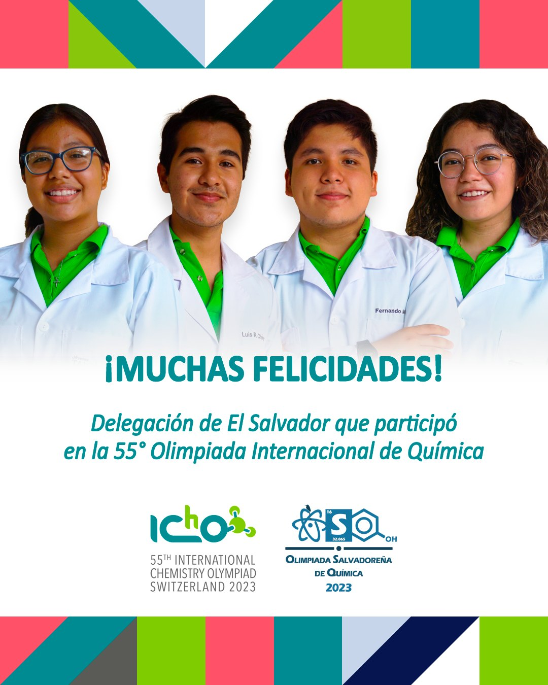
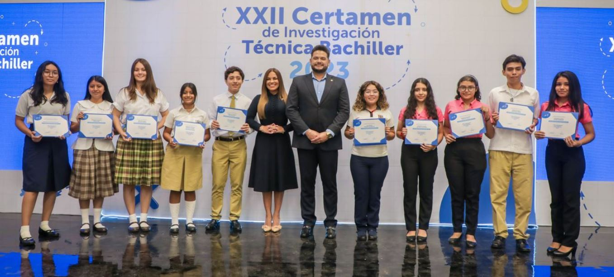

Biografía Giselle Salomón
Escrita por Luz Giselle Salomón Sandoval

Luz Giselle Salomón Sandoval (22 de septiembre, 2005) nació en San Salvador, El Salvador. Ella tiene 2 hermanas menores y sus padres son Luz de Salomón y Domingo Salomón. Actualmente tiene 19 años y está cursando la universidad.
Sus padres enfocaron gran parte de sus esfuerzos en su educación temprana, enseñandole matemáticas básicas y vocabulario en inglés y español. De acuerdo a su testimonio, durante esta etapa de su vida, Giselle era una niña muy extrovertida y "platicona".
Durante este periodo de tiempo asistió a dos instituciones educativas:
Desde primero hasta sexto grado, su talento en el areá académica constantemente destacaba. Esto llevo a una indiferencia hacia lo que normalmente se considerarían "logros" académicos. Esto, acompañado de la falta de un círculo cercano, llevo a un sentimiento de alienación y aislamiento en su vida diaria. Esta tendencia paró a finales de cuarto grado, cuando tuvo su primer acercamiento al Programa Jóvenes Talento (PJT).
Durante este periodo, el enfoque de su vida y círculo cercano tuvo un cambio drástico. El PJT es un programa creado por la Dra. María Isabel Rodríguez para impulsar el talento en las ciencias y las matemáticas de los niños a nivel nacional. Ingreso oficialmente en 5to grado y formó parte de este hasta su graduación, el colegio pasó por completo a un segundo plano para ella. Desde obtener su primera mala nota hasta superarse y representar al país en diversas competencias internacionales, el sentimiento de alienación y la indiferencia por lo académico desaparecio. Gracias a las diversas clases y exposión temprana por profesores apasionados por las areas que enseñaban, ella descubrió su pasión por la química y la informática.
A partir de sexto grado comenzó su carrera como representante del país en olimpiadas internacionales. Históricamente, formo parte de 3 grupos olímpicos:
| Grupo Olímpico | Matemáticas | Química | Informática |
| Duración | 2018-2020 | 2019-2023 | 2020 |
| Olimpiadas |
|
|
|
*Participó en esta olimpiada de como miembro honorario en 2022 después de haberse salido del grupo.
A diferencia de la mayoría de sus compañeros, ella no comenzó la universidad inmediatamente después de graduarse. Lo más destacable de este periodo es su participación en el XXII Certamen de Investigación Técnica Bachiller organizado por el Banco Central de Reserva (BCR) de El Salvador. La temática de esta edición era "Propuesta para el uso de las remesas como instrumento de crecimiento económico en El Salvador" y su trabajo se llevo el segundo lugar, dejandole a ella como premio una beca con la que apoyar sus estudios.
Su carrera universitaria formalmente en enero de 2024. Ella ingresó como estudiante de primer año en la nueva carrera de la Escuela Superior de Economía y Negocios (ESEN), Ingeniería de Software y Negocios Digitales (ISND). Gracias a su destacable desempeño en el examen de admisión obtuvo la beca a la Excelencia Académica proporcionada por la universidad durante todo su primer año de carrera.
Actualmente ella aún cursando esta etapa que no ha estado ausente de nuevas experiencias donde ella se ha introducido más en su industria seleccionada. Desde unirse a EduTECH, una asociación estudiantil para reducir la brecha technológica en El Salvador, hasta ayudar a organizar "Bit-By-Bit GameJam" durante la semana del software.
